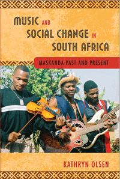

A comprehensive analysis of maskanda, a Zulu musical practice, in the context of political, cultural, and historical transformation in South Africa
A comprehensive analysis of maskanda, a Zulu musical practice, in the context of political, cultural, and historical transformation in South Africa


 A comprehensive analysis of maskanda, a Zulu musical practice, in the context of political, cultural, and historical transformation in South Africa
A comprehensive analysis of maskanda, a Zulu musical practice, in the context of political, cultural, and historical transformation in South Africa

|  |
Music and Social Change in South AfricaMaskanda Past and PresentKathryn Olsencloth EAN: 978-1-43991-136-5 (ISBN: 1-4399-1136-3) |
Music and Social Change in South Africa looks at contemporary maskanda-a folk musical genre distinguished by fast guitar picking and blues-style vocal intonation-against the backdrop of South Africa's history. A performance practice that emerged in the early decades of the twentieth century among Zulu migrant workers, maskanda is strongly associated with young Zulu men's experiences of repression and dislocation during imperial and, more particularly, apartheid rule.
Working closely with translated song lyrics and musical notation-and applying musical and socio-political analysis to this music and its cultural context-Olsen argues that maskanda offers insight into how the post-apartheid ideal of social transformation is experienced by those who were marginalized for most of the twentieth century.
Drawing on a decade of research, Olsen strives to demystify the Zulu part of contemporary experience in South Africa and to reveal some of the complexities of the social, economic, and political landscape of contemporary South Africa.
Excerpt available at www.temple.edu/tempress
"Written in clear, simple language, Music and Social Change in South Africa is an informative book that will be useful to ethnomusicology students interested in social changes in Africa, in particular South Africa during and after apartheid. Summing Up: Recommended."
—CHOICE
"[A] fascinating book.... Olsen is particularly good on maskanda's subject matter, with careful translations and detailed textual analysis of the music's coded lyrics. As a music-lover rather than an academic...does such forensic examination squeeze the passion out of the subject or inspire the reader to want to hear more? In the case of Olsen's book, the answer is resoundingly the latter."
—Songlines
Contents
Acknowledgments
Prologue
1. Maskanda Researched: The Parallax View
2. Maskanda�s Early Years
3. Maskanda as Commodified Tradition
4. Men Making Maskanda in Post-apartheid South Africa
5. Women Playing Maskanda
6. Experiencing Transformation
Notes
References
Index
Kathryn Olsen is Lecturer in Ethnomusicology, Popular Music, and Related Studies at the University of KwaZulu-Natal, South Africa.
African Studies
Music and Dance
Cultural Studies
© 2015 Temple University. All Rights Reserved. This page: http://www.temple.edu/tempress/titles/2260_reg.html.